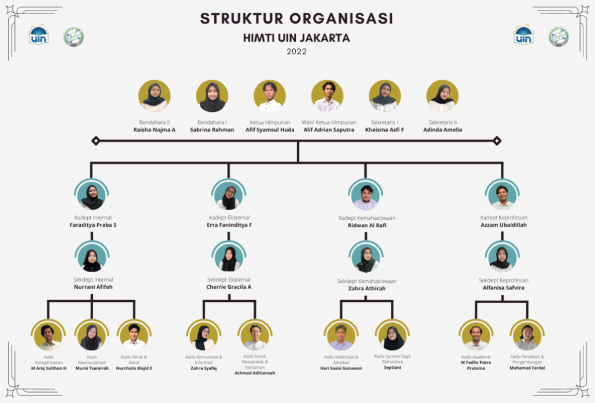
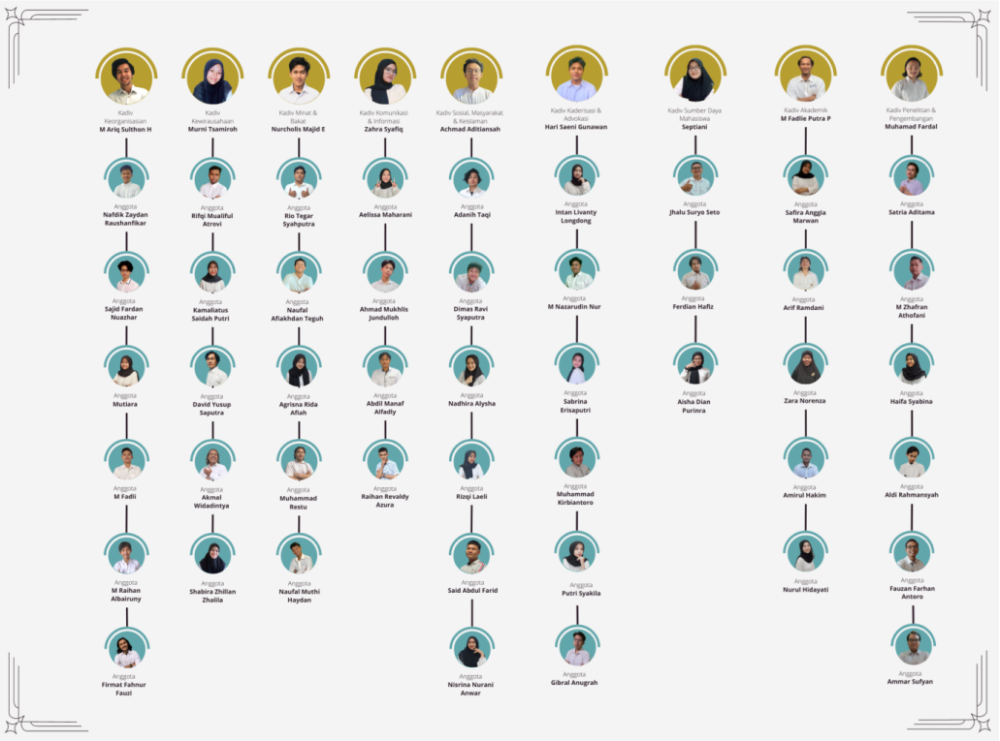

Apa itu HIMTI UIN Jakarta?
HIMTI UIN Syarif Hidayatullah Jakarta merupakan wadah silaturahmi dan pemersatu antar Mahasiswa dengan Alumni Program Studi Teknik Informatika UIN Syarif Hidayatullah Jakarta, serta berfungsi sebagai penyelenggara kegiatan untuk kemahasiswaan, penalaran, dan keilmuan di bidang teknologi informasi.
Visi
Terwujudnya HIMTI UIN Jakarta yang dinamis dan aktif dalam fungsi internal dan eksternal dengan berlandaskan semangat solidaritas dan profesionalitas dalam menuju himpunan yang harmoni.
Meningkatkan peran proaktif Mahasiswa TI dalam aktivitas organisasi, profesi, maupun minat dan bakat.
Menjadikan HIMTI UIN Jakarta sebagai wadah sekunder bagi Mahasiswa TI dalam mengembangkan kemampuan akademis maupun non-akademis.
Mempererat hubungan persaudaraan antar Mahasiswa TI melalui semangat solidaritas dan profesionalitas
Mars HIMTI
Dummy lirik
Meningkatkan peran proaktif Mahasiswa TI dalam aktivitas organisasi, profesi, maupun minat dan bakat.
Menjadikan HIMTI UIN Jakarta sebagai wadah sekunder bagi Mahasiswa TI dalam mengembangkan kemampuan akademis maupun non-akademis.
Mempererat hubungan persaudaraan antar Mahasiswa TI melalui semangat solidaritas dan profesionalitas
Struktur Organisasi
 